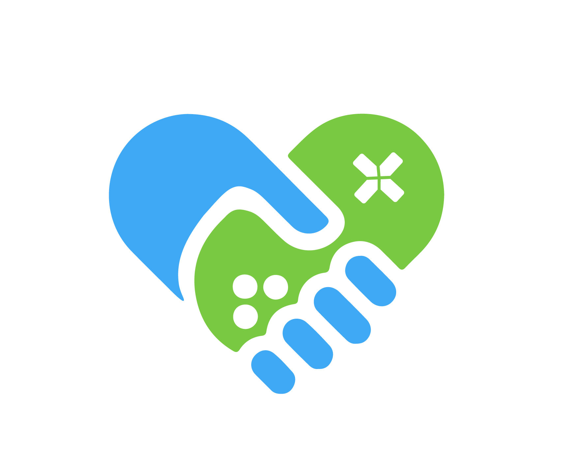
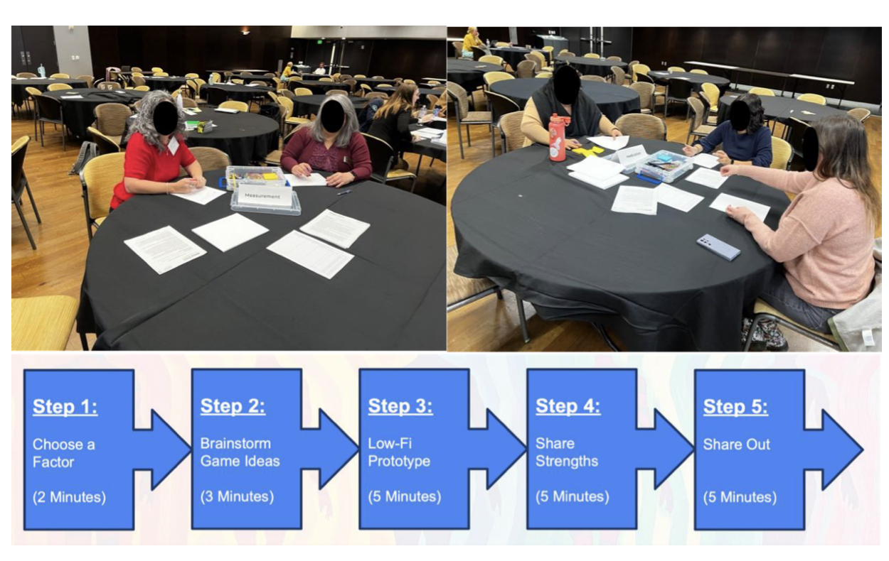
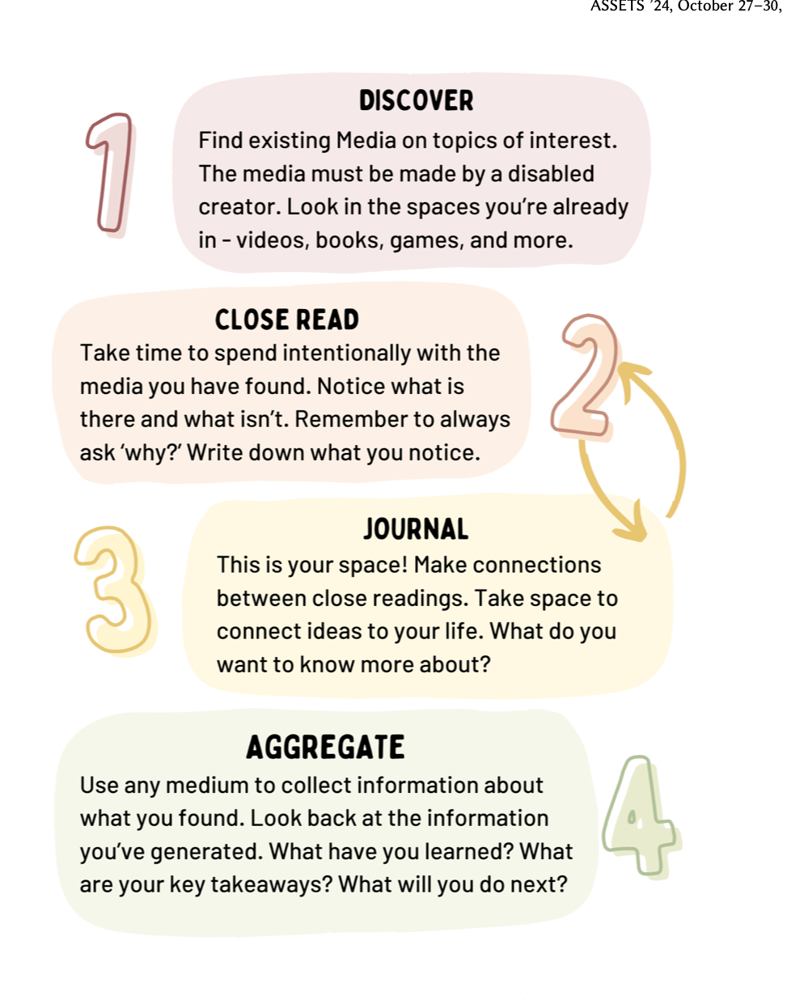
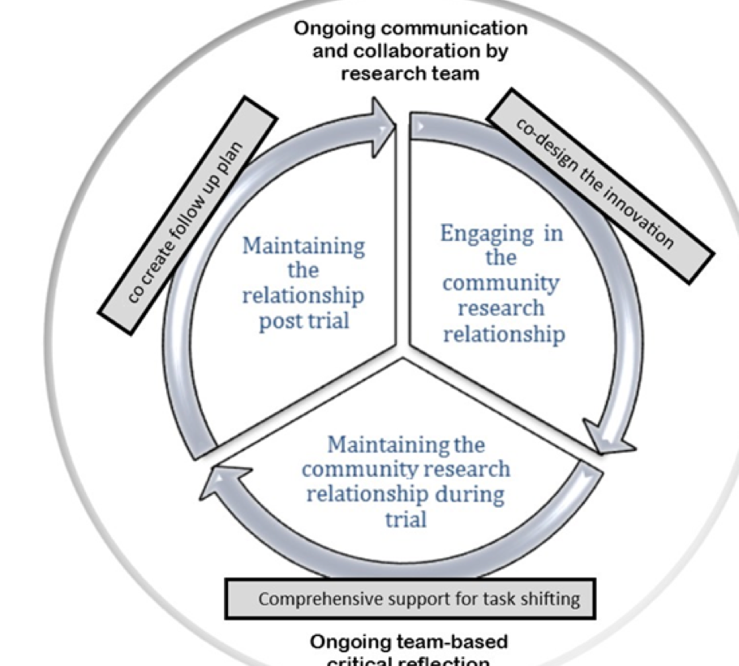
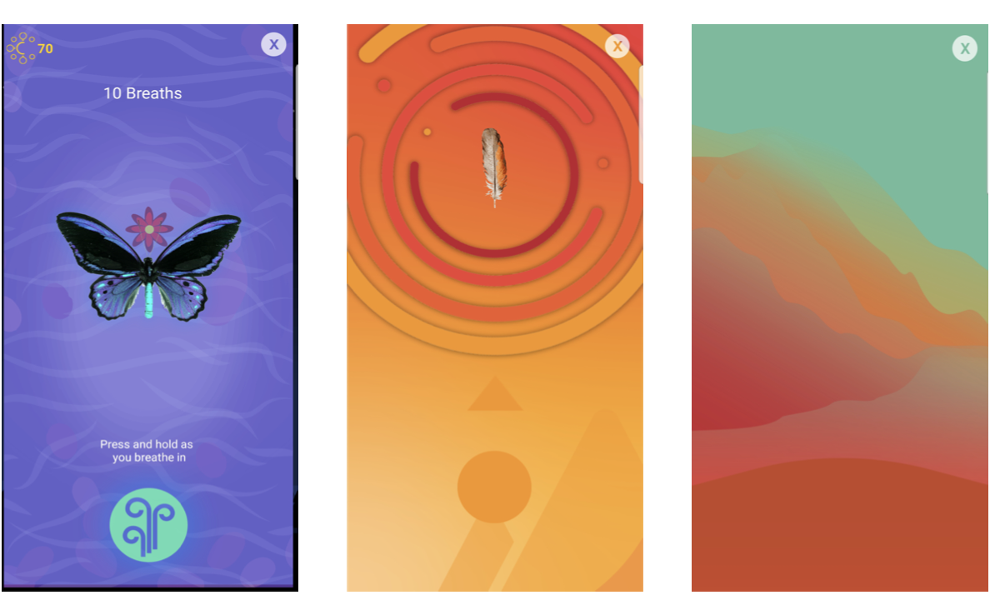
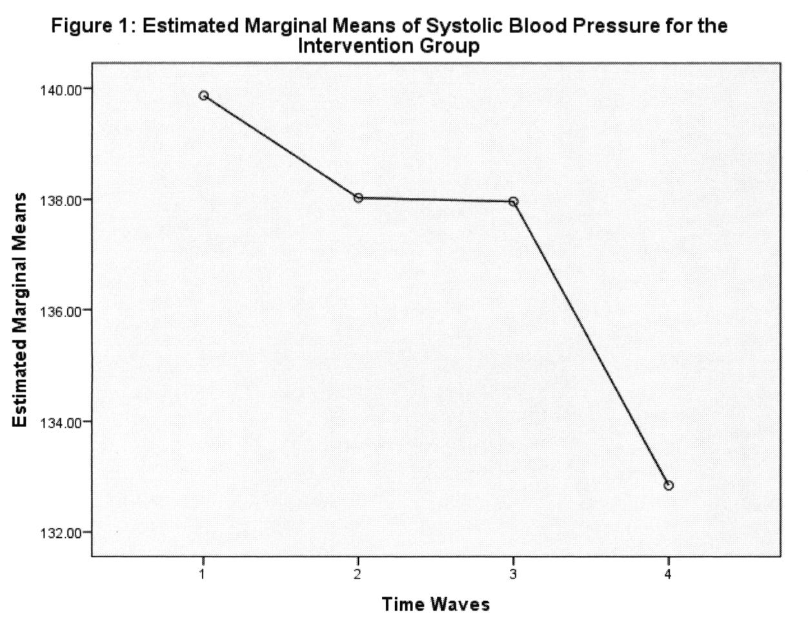
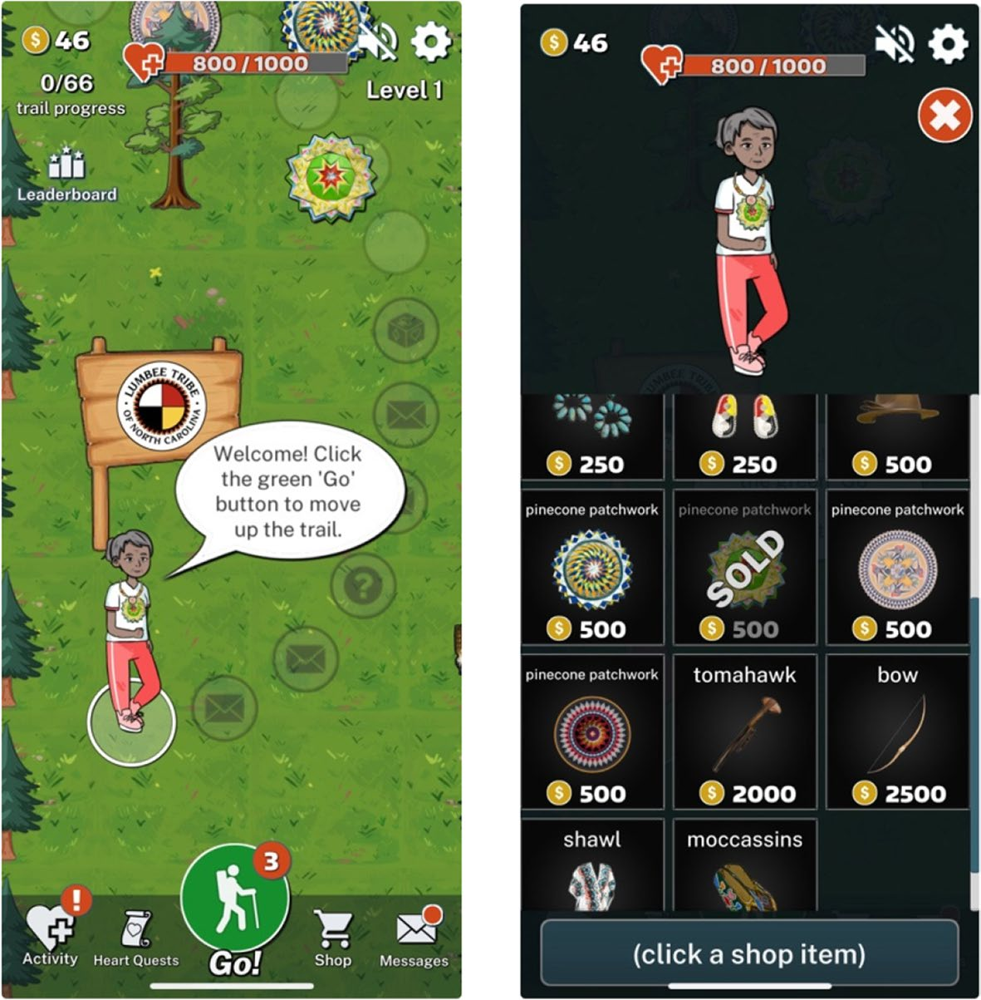

A Scoping Review

We honor their past, present, and future generations, who have lived here for millennia and will forever call this place home.
Blood pressure that stays high, 130 over 80 or above. It usually has no symptoms, yet over years it damages the heart, kidneys, and brain. It is manageable: even a 10 mmHg drop in systolic pressure meaningfully lowers the risk of stroke and heart disease.
Self-report sits near the US average, but measured studies run higher: in a Navajo survey, only 50 of 97 adults with high blood pressure had ever been told. Heart disease was the 4th leading cause of death on the New Mexico Navajo Nation, 2021 to 2024. The people at the center of this work are urban Diné adults in Flagstaff.
And management is harder: inaccessible materials, proxy-dependent care, and few tools built for disabled players. This review treats people with disabilities broadly, as its own dimension.
These two are usually studied apart. Where they meet, the experience is different, not added (Crenshaw), and HCI has mostly studied one identity at a time.
The overlap is this review: urban Diné adults with disabilities, and their supporters, as one population.
To study that intersection in playful health technology, I ask three questions.
Six concept blocks: games, technology, hypertension, Indigenous, disability, and design
This hierarchy is the structure of the rest of the talk. For each part: what the literature says, the design implications, and a great example of prior work.

The review charts the literature by these five factors.
Blood pressure measured in 780 adults across the Navajo Nation. Of the 97 found to have high blood pressure, only 50 had ever been told.
No study brings a game for hypertension to both an Indigenous community and people with disabilities.
Two years co-designing with adults with severe intellectual disability: little and often, only the help needed, choice kept with the person. One participant, Merry, entered the activity room for the first time in years.
Three years with a paid advisory panel of adults with intellectual disability, treated as experts by experience: easy-read text, adult (not childish) images, story-based activities, and polished prototypes rather than rough sketches.
Seven disabled scholars document the epistemic violence of being written up as deficits and burdens in the research about them. Their title: "I am just terrified of my future."
DREEM starts from media made by disabled creators, building understanding without spending participants' access labor.
For this work: start with media made by Diné and disabled creators, then bring better questions to the community.

In a critical review by Vigil-Hayes and colleagues, only 4 of 84 Indigenous health-technology studies engaged with who owns and controls community data. Historical trauma, from colonization and harmful research, shapes trust.
Design implications: community control of data, results shared back, and a community advisory board.

Design implications: start from what the community values; let the community decide what is shared.

Of the 22 games and playful tools for hypertension in this review, nearly all are closed, structured games; open, situated play is rare. Effects are real but short: eSMART-HD cut systolic pressure about 7 mmHg, yet MyHeartMate kept only 27% of players after 30 days.
Design implications: room for open, social play in daily life, and engagement that lasts beyond the first weeks.

| Game | Who took part | Design | What they found |
|---|---|---|---|
| eSMART-HD | 116 adults w/ hypertension, Ohio | RCT, 4 sessions | ~7 mmHg drop; not sig. vs control |
| MyHeartMate | 390 heart patients, Sydney | RCT, 6 months | 27% still playing after 30 days |
| BewARe | 11 older adults w/ hypertension | Interviews w/ prototypes | safe, wireless, controller-based |
| Lumbee game | 220 Lumbee adults (planned) | RCT protocol, step tracker | excludes people who use a walker |
| Graham et al. | 14 Indigenous participants, AZ | Participatory workshop | 5 prototypes, one per factor |
| Li et al. 2026 | 14 adults w/ prehypertension, China | Interviews | simple, social play preferred |
Missing across all of them: players with disabilities, and lasting engagement.
About 13 studies designed with the community: 7 with Indigenous communities, 6 with people with disabilities. The two sets barely overlap, and workshops can themselves exclude people.
Design implications: fair pay, respect for community assets, community goals, and support that continues after funding.

No single definition; solutions are better or worse, not right or wrong. Research through design learns by making.
Study, Situated Play Design (Duval 2022): food traditions from many cultures studied as starting points for playful design.
| Theme | Indigenous | Disability | General |
|---|---|---|---|
| Cultural grounding | 13 | 1 | 1 |
| Sovereignty | 6 | 0 | 0 |
| Proxy care | 0 | 6 | 0 |
| Accessible protocols | 0 | 12 | 1 |
| Technosolutionism | 0 | 4 | 2 |
No study looked at proxy care or accessible protocols with Indigenous people, the gap an intersectional review is meant to show. Counts are studies per theme; a study may address more than one.
Hypertension and play are common, and Indigenous studies are built with the community. The three thin columns, disability · data control · open play, are where the literature has the least to offer. (click)
Design. How do urban Diné adults with disabilities and their supporters co-design playful tools for daily blood-pressure care?
Support. How can caregiver help be designed in, while keeping the player's own voice?
Culture. How can cultural grounding and community data control be built in, and judged by the community?
Play. How do closed games and open, situated play differ in keeping people engaged?
One game per factor, built in Flutter + Firebase with story games in Twine, works offline. Not yet deployed; next is accessibility work with players with disabilities and a community data plan.
Across the 67, only one designed technology with both an Indigenous community and attention to disability: Graham et al. 2025, from this lab. None paired that with a game for hypertension.
The review contributes an intersectional synthesis of the 67 studies, a hierarchy of themes with design implications, and requirements traced to the evidence.
Turn those ideas into playable games across diet, exercise, medication, monitoring, and education, add accessibility work with players with disabilities and a community data-sovereignty plan, then evaluate in a user study.
serious game, gamification, exergame, playful, game-based
mHealth, app, digital health, mobile, wearable, sensor
hypertension, blood pressure, BP self-management, cardiovascular
Indigenous, Native American, American Indian, Navajo, Diné, First Nations, Aboriginal
disability, accessible, Deaf, intellectual disability, impairment
co-design, participatory design, human-centered, community-based
Blocks combined with AND across games/technology, condition, population, and method; terms shown are representative.
| Study | Intervention | Sample | Systolic / Diastolic |
|---|---|---|---|
| da Silva 2018 | Dance video game, 1 session | 15 hypertensive | −14.4 / −7.6 mmHg |
| Anggraini 2025 | Handgrip exergame | 50 | −9.5 / −10.5 mmHg |
| Hickman 2015 (eSMART-HD) | Serious game, 4 months | 116 RCT | −7 / −5 (within-group) |
| Kircher 2022 (ExerCube) | Exergame, acute | 28 crossover | −6.3 / −4.8 mmHg |
| Gottlieb 2026 (Nuna) | Gamified mHealth | 425 vs 425 | SBP −4.6 vs −1.6 |
| Mills 2017 (Work It Out) | Urban Aboriginal program | 85 | −11 (high-BP subgroup) |
| Zhu 2025 (meta-analysis) | Active video games, children | 16 studies | SBP SMD −0.50 |
| Hou 2023 | Wii Sports, 16 weeks | 128 RCT | no BP effect |
| Goldfield 2011 | Seated gaming (observational) | 282 teens | higher systolic |
Effects are often acute or within-group; sustained, between-group reductions remain uncommon.
| Research question | Studies |
|---|---|
| RQ1 · games / playful tech for hypertension | 22 |
| RQ1.1 · for Indigenous or disability | 16 |
| RQ2 · HCD methods for intersectional design | 29 |
| Total | 67 |
| Source | Studies |
|---|---|
| Database search | 42 |
| Intersectional HCI (targeted) | 15 |
| Reference / library | 10 |
| Total | 67 |
31 Navajo adults, 7 days, in English and Diné bizaad, with Native Americans for Community Action.
36 adults with disabilities and caregivers produced 23 game concepts.
Community members played CardioCare Quest, with and without caregiver support.